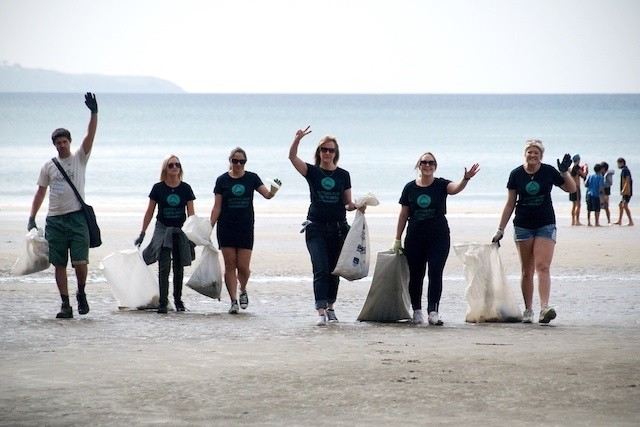
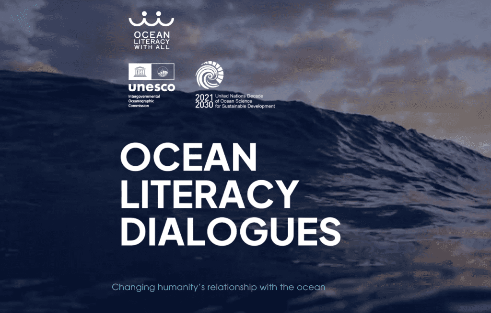

Welcome to SaveTheOceans
We believe that a healthy ocean is essential for a thriving planet. Our mission is to conserve marine life and protect ocean ecosystems through advocacy, education, and community engagement. Join us in our journey to safeguard the waters that cover over 70% of our Earth.
Latest Campaigns Section
-
Clean Seas Initiative: Help us remove plastic waste
from our beaches and oceans. Join our upcoming beach clean-up events
and be part of the solution!

-
Coral Reef Restoration: Support our efforts to
rehabilitate damaged coral reefs. Learn how you can contribute to
our planting projects.

-
Ocean Literacy Program: Educate future generations
about marine conservation. Find resources and workshops to help
spread awareness.

Get Involve
Join the Movement Whether you’re looking to donate, volunteer, or simply spread the word, there are countless ways to get involved. Together, we can make a significant impact on ocean conservation.